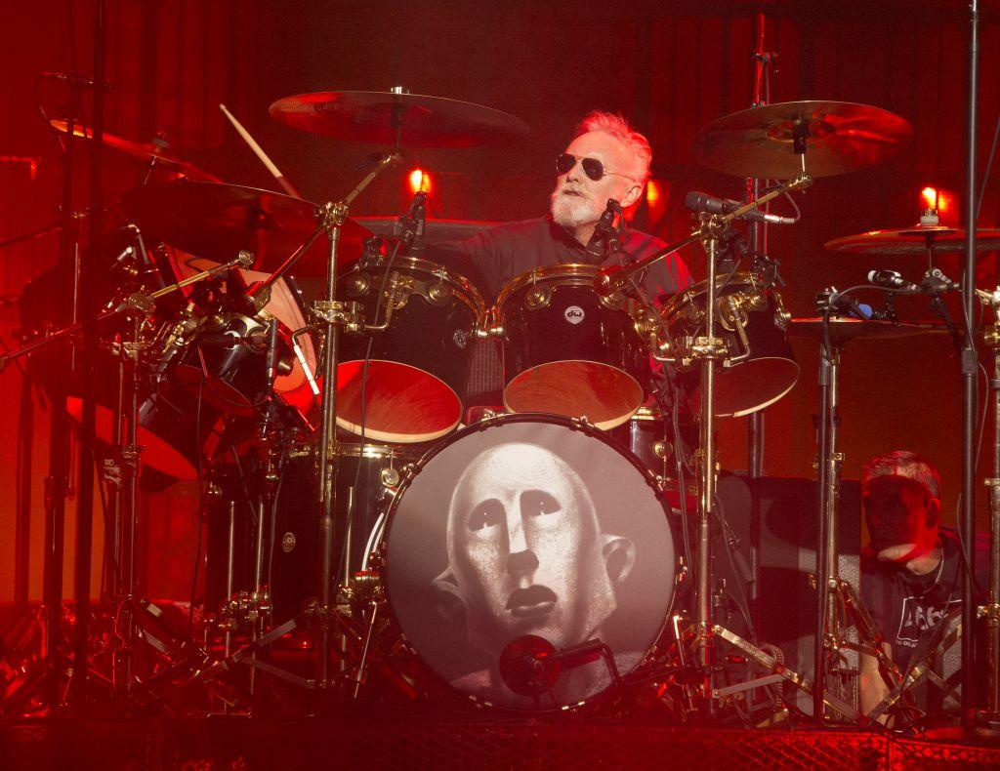
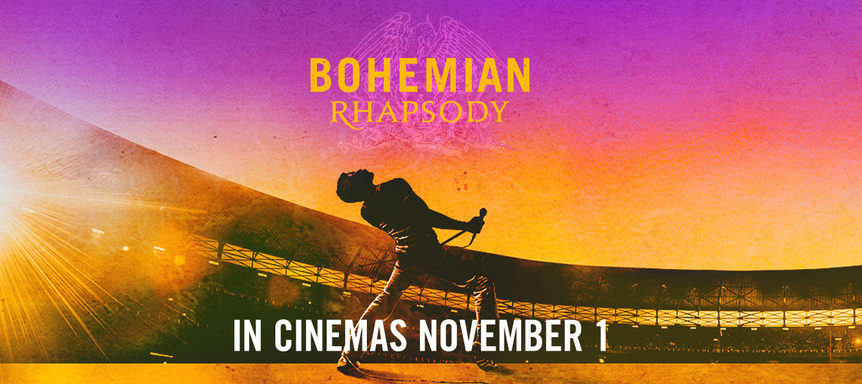
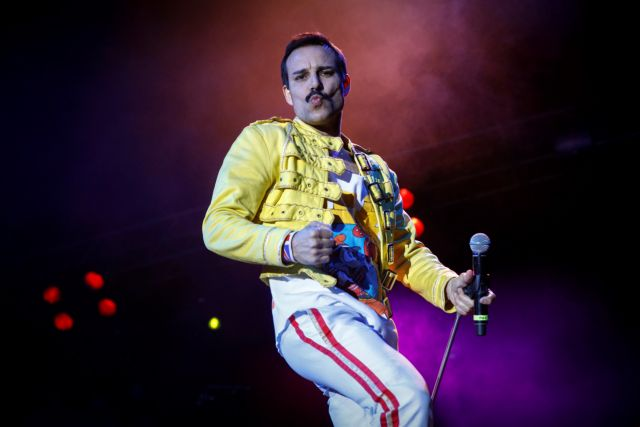
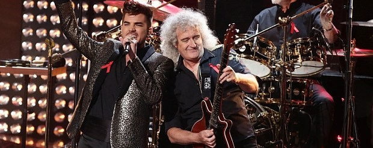

Πρόσφατα Νέα
Οι Γκάνστερ κυβερνούν αυτόν τον κόσμο» λέει ο Ρότζερ Τέιλορ των Queen 2019

Ο ντράμερ των Queen, Ρότζερ Τέιλορ κυκλοφόρησε ένα καινούριο σόλο single με τίτλο «Gangsters Are Running This World» (Οι Γκάνγκστερ κυβερνούν αυτόν τον κόσμο).Το τραγούδι είναι το πρώτο που γράφει ο καλλιτέχνης τα τελευταία πέντε χρόνια και περιλαμβάνει στίχους που αφορούν την κατάσταση στον κόσμο.«Υπάρχει αίμα στους δρόμους / Πανικός στον αέρα / Οι αγορές διαπραγματεύονται επάνω / Σε τρέλα και φόβο» τραγουδά ο Τέιλορ στο νέο single.Δεν είναι η πρώτη φορά που ο Ρότζερ Τέιλορ έχει κάνει πολιτικές δηλώσεις μέσω του έργου του. Το 1994 κυκλοφόρησε το single «Nazis» ενώ στο άλμπουμ του 1998 «Electric Fire» συμπεριέλαβε διασκευή του «Working Class Hero» του Τζον Λένον.Σύμφωνα με το NME, δεν υπάρχουν προς το παρόν πληροφορίες για ένα νέο άλμπουμ, στο οποίο θα συμπεριληφθεί το «Gangsters Are Running This World».Το θρυλικό συγκρότημα δεν έκανε επίσημα σχόλια για συνέχεια της βιογραφικής ταινίας για τον εκλιπόντα τραγουδιστή του, Φρέντι Μέρκιουρι.
8 Απριλίου 2019
Nicki Minaj: «Το “Queen” θα είναι το καλύτερο άλμπουμ της χρονιάς» 2018
Όταν ερωτήθηκε για τον καινούριο δίσκο της, το «Queen», η Nicki Minaj δε χρειάστηκε να πει πολλά: «Νομίζω πραγματικά ότι θα είναι το καλύτερο άλμπουμ της χρονιάς», δήλωσε με μεγάλη σιγουριά.
13 Ιουνίου 2018
Νέα Ταινία: Bohemian Rhapsody 2018

Το 2018 μια βιογραφική κινηματογραφική ταινία με τίτλο “BOHEMIAN RHAPSODY” θα κάνει την εμφάνισή της στις κινηματογραφικές αίθουσες. Η ταινία ακολουθεί τη ραγδαία άνοδο της βρετανικής μπάντας των Queen μέσα από τα εμβληματικά τραγούδια και τον επαναστατικό τους ήχο. Την ώρα που το συγκρότημα γνωρίζει τεράστια επιτυχία, ο ηγέτης τους, Freddie Mercury, αποχωρεί για να κάνει σόλο καριέρα. Έχοντας όμως υποφέρει πολύ χωρίς τους Queen, καταφέρνει να επανενωθεί μαζί τους λίγο πριν τη συναυλία «Live Aid». Και έχοντας μόλις διαγνωσθεί ως φορέας του AIDS, ο Mercury οδηγεί με γενναιότητα την μπάντα σε μία από τις καλύτερες συναυλίες στην ιστορία της ροκ μουσικής.
1 Νοεμβρίου 2018
Freddie Mercury: Ο θρυλικός ηγέτης των Queen 2018

Ο θρύλος της ροκ μουσικής, Freddie Mercury έφυγε από τη ζωή πριν από 26 χρόνια. Ένας από τους πιο ταλαντούχους και χαρισματικούς τραγουδιστές όλων των εποχών, ενώ υπήρξε τραγουδιστής των Queen.
24 Νοεμβρίου 2018
Νέα περιοδεία για τους Queen και τον Άνταμ Λάμπερτ 2017

Ο Άνταμ Λάμπερτ και οι Queen ετοιμάζουν μια νέα περιοδεία φέτος το καλοκαίρι, συνεχίζοντας τη συνεργασία τους, που ξεκίνησε το 2011. Έχουν ήδη προγραμματιστεί 25 σταθμοί στη Βόρεια Αμερική, στους οποίους το ιστορικό συγκρότημα θα παίξει γνωστές επιτυχίες, ανάμεσά τους και το «We are the Champions», το οποίο χρησιμοποίησε ο Ντόναλντ Τραμπ στο Συνέδριο των Ρεπουμπλικανών, το καλοκαίρι που μας πέρασε. Κάτι που δεν άρεσε στα μέλη του σχήματος «Δεν γράψαμε ένα πολιτικό τραγούδι,το χρησιμοποίησε για να διασκεδάσει τους συνέδρους» τόνισε ο Ρότζερ Τέιλορ, ενώ ο Μπράιαν Μέι συμπλήρωσε:«Πρόκειται για κατάχρηση στην ουσία του τραγουδιού μας. Το κομμάτι αφορά τον κόσμο, αυτοί είναι οι πρωταθλητές. Είναι ένα τραγούδι που ενώνει τους ανθρώπους. Δεν είναι ένα τραγούδι για τον καλύτερο. Ναι, αισθανθήκαμε ότι το τραγούδι δεν χρησιμοποιήθηκε σωστά. Μας εξευτελίζει που το χρησιμοποίησαν με τέτοιο τρόπο».0 34χρονος Άνταμ Λάμπερτ και οι Queen έχουν ήδη αρκετές sold out περιοδείες σε Ασία, Ευρώπη, Αυστραλία και Βόρεια Αμερική.
30 Ιανουαρίου 2017